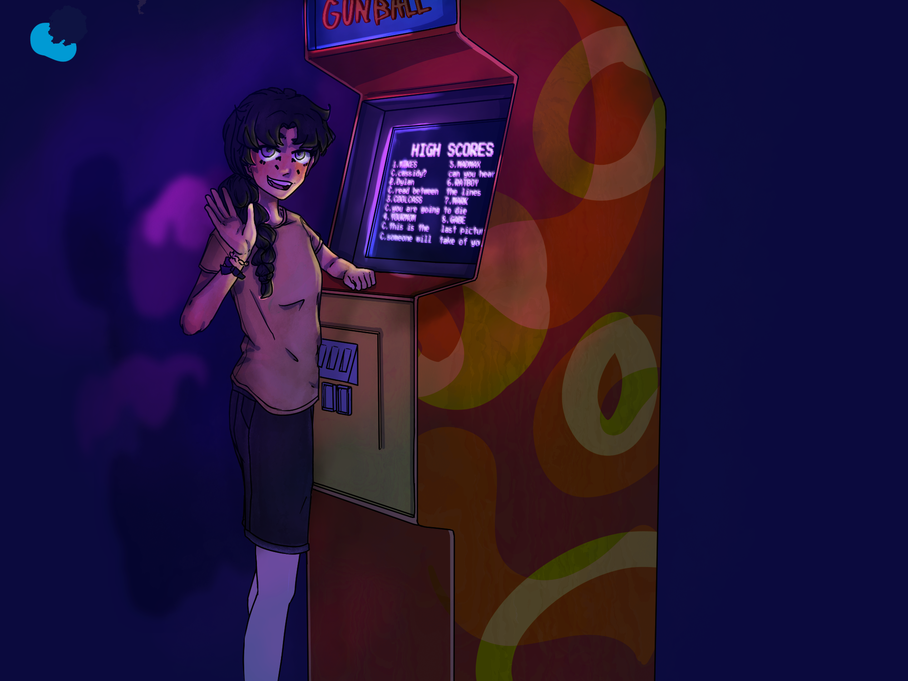
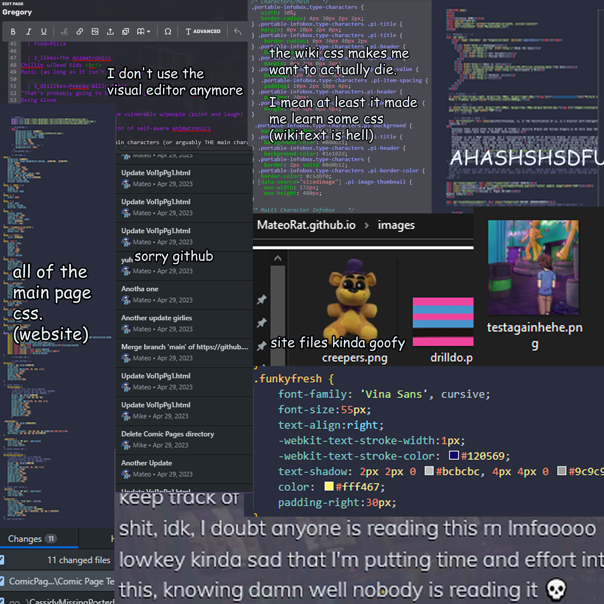

The goodies page is just a ton of random content, mostly images/memes, random brainrot, character designs, and concept art

All of the missing posters were fully colored and were much larger drawings before they were turned black and white and crusty-fied. Cassidy's in particular has a lot of detail. It does get lazier the farther out it goes tho lol
First character study/attempt at drawing Glamrock Freddy. This isn't his current ref lol mf looks very different now

A compliation of random BTS code of the wiki, website, and a few of Mike's goofy ass files